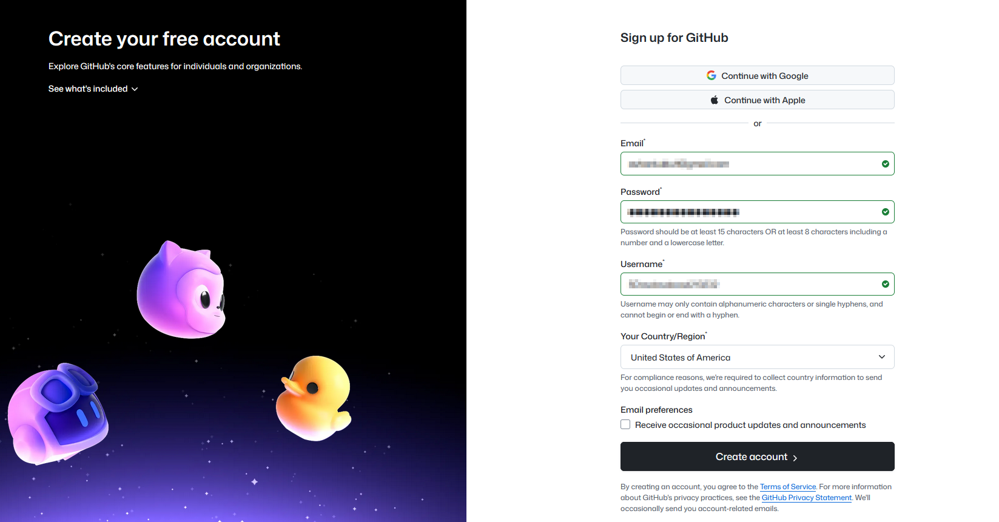

Create your GitHub account
Go to github.com, click Sign Up, and follow the prompts.
- Choose a memorable username and secure password.
- Verify your email when GitHub sends the confirmation message.

We'll create a GitHub account, set your identity in Git, generate SSH keys, and sign in from VS Code.
Go to github.com, click Sign Up, and follow the prompts.
Run these commands once so every commit is tagged with your name and email.
git config --global user.name "Your Name"
git config --global user.email "you@example.com"Use the same email address you signed up with on GitHub so commits link to your profile.
SSH keys let you push and pull code without typing your GitHub password each time.
Open your terminal (Git Bash on Windows) and run:
ssh-keygen -t ed25519 -C "you@example.com"Press Enter to accept the default location. Add a passphrase for extra security if you want.
Then show the public key so you can copy it:
cat ~/.ssh/id_ed25519.pubIn GitHub, go to Settings → SSH and GPG keys → New SSH key, paste the copied key, and save.
F1 (or Ctrl+Shift+P) and run GitHub: Sign in.Run the SSH test command. GitHub should greet you by username if everything is wired up.
ssh -T git@github.comIf you see "Hi username! You've successfully authenticated," you're ready to push code.
Git knows who you are, VS Code is connected, and SSH is ready. Next up: collaborating with a team.
Continue to Lesson 4 →